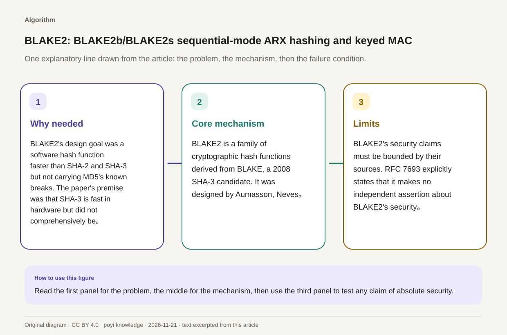
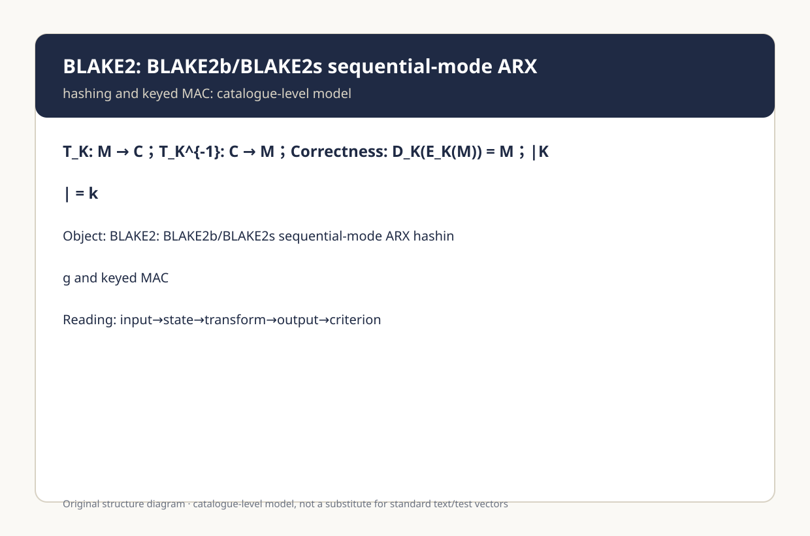

Principles
Algorithm: BLAKE2 (BLAKE2 散列). BLAKE2 is a family of cryptographic hash functions derived from BLAKE, a 2008 SHA-3 candidate. It was designed by Aumasson, Neves, Wilcox-O'Hearn and Winnerlein and comes in two basic variants: BLAKE2b for 64-bit platforms and BLAKE2s for 8- to 32-bit platforms. Both share one structure; word size, round count, block size and parameter ranges differ. | Parameter | BLAKE2b | BLAKE2s | | --- | --- | --- | | Word size w | 64 bits | 32 bits | | Compression rounds r | 12 | 10 | | Block bytes bb | 128 | 64 | | Digest bytes nn | 1 to 64 | 1 to 32 | | Key bytes kk | 0 to 64 | 0 to 32 | | Input bytes ll | below 2^128 | below 2^64 | | G rotation constants (R1,R2,R3,R4) | (32,24,16,63) | (16,12,8,7) |
The internal state is eight words h[0..7]. The initial value IV comes from the fractional parts of square roots of primes: IV[i] = floor(2^w * frac(sqrt(prime(i+1)))), where prime(i) is the i-th prime "2, 3, 5, 7, 11, 13, 17, 19". BLAKE2b's IV equals SHA-512's IV and BLAKE2s's IV equals SHA-256's IV. Input, key and output are interpreted little-endian: bytes fill a word starting from its least significant position. Only one parameter word is used in RFC 7693's sequential mode:
p[0] = 0x0101kknn p[1..7] = 0
h[0] = IV[0] XOR p[0]
Here nn is the digest length in bytes and kk is the key length in bytes; kk=0 means unkeyed hashing. The parameter block binds digest length and key length into the initial state, so the same message hashed with a different output length or key length is a different function, not a prefix of the same digest. The compression function F takes the state h, one 16-word message block m, the byte counter t and a last-block flag f:
v[0..7] = h[0..7]
v[8..15] = IV[0..7]
v[12] ^= (t mod 2^w)
v[13] ^= (t >> w)
if f = true: v[14] ^= 0xFF..FF
repeat r rounds:
s = SIGMA[round mod 10]
G(v, 0, 4, 8, 12, m[s[0]], m[s[1]])
G(v, 1, 5, 9, 13, m[s[2]], m[s[3]])
G(v, 2, 6, 10, 14, m[s[4]], m[s[5]])
G(v, 3, 7, 11, 15, m[s[6]], m[s[7]])
G(v, 0, 5, 10, 15, m[s[8]], m[s[9]])
G(v, 1, 6, 11, 12, m[s[10]], m[s[11]])
G(v, 2, 7, 8, 13, m[s[12]], m[s[13]])
G(v, 3, 4, 9, 14, m[s[14]], m[s[15]])
h[i] ^= v[i] ^ v[i+8] i = 0..7
G is BLAKE's mixing primitive; each G performs two add-xor-rotate cycles:
v[a] = (v[a] + v[b] + x) mod 2^w
v[d] = (v[d] XOR v[a]) >>> R1
v[c] = (v[c] + v[d]) mod 2^w
v[b] = (v[b] XOR v[c]) >>> R2
v[a] = (v[a] + v[b] + y) mod 2^w
v[d] = (v[d] XOR v[a]) >>> R3
v[c] = (v[c] + v[d]) mod 2^w
v[b] = (v[b] XOR v[c]) >>> R4
>>> is a right rotation. BLAKE2b uses (32,24,16,63) and BLAKE2s uses (16,12,8,7). The rotation choices are processor optimisations: a 24-bit rotation can be done with one SSSE3 pshufb instruction, and a 63-bit rotation is a left rotation by one bit. The message schedule is defined by ten permutations SIGMA[0..9], each a permutation of 0 to 15:
SIGMA[0] = 0 1 2 3 4 5 6 7 8 9 10 11 12 13 14 15
SIGMA[1] = 14 10 4 8 9 15 13 6 1 12 0 2 11 7 5 3
SIGMA[2] = 11 8 12 0 5 2 15 13 10 14 3 6 7 1 9 4
SIGMA[3] = 7 9 3 1 13 12 11 14 2 6 5 10 4 0 15 8
SIGMA[4] = 9 0 5 7 2 4 10 15 14 1 11 12 6 8 3 13
SIGMA[5] = 2 12 6 10 0 11 8 3 4 13 7 5 15 14 1 9
SIGMA[6] = 12 5 1 15 14 13 4 10 0 7 6 3 9 2 8 11
SIGMA[7] = 13 11 7 14 12 1 3 9 5 0 15 4 8 6 2 10
SIGMA[8] = 6 15 14 9 11 3 0 8 12 2 13 7 1 4 10 5
SIGMA[9] = 10 2 8 4 7 6 1 5 15 11 9 14 3 12 13 0
BLAKE2b has 12 rounds, with rounds 10 and 11 repeating SIGMA[0] and SIGMA[1]; BLAKE2s's 10 rounds use all ten permutations exactly once. The message is split into bb-byte blocks, with block count dd = ceil(kk/bb) + ceil(ll/bb). With a key, the key is zero-padded to bb bytes and becomes d[0], with message blocks starting at d[1]; without a key, d[0] is the first message block. The last block is zero-padded to bb bytes. One special case is an unkeyed empty message: a single all-zero block is still processed, with dd=1. Every non-final block i is compressed with t=(i+1)*bb; the final block uses t=ll when unkeyed and t=ll+bb when keyed. The final block sets f true, and the output is the first nn bytes of the little-endian byte stream of h[0..7]. Keyed mode needs no HMAC construction: the key is treated as the first data block and the counter includes it, so the construction is both a MAC and a PRF. Hashing an empty message with a key makes a single compression call with t=bb. RFC 7693 defines only the sequential-mode parameter fields (digest length and key length). The BLAKE2 paper additionally defines salt, personalization and tree-hashing parameters in parameter-block fields that RFC 7693 leaves undefined; an implementation using those extensions cannot be assumed to interoperate with an implementation of the RFC's sequential mode alone.

Why it matters
BLAKE2's design goal was a software hash function faster than SHA-2 and SHA-3 but not carrying MD5's known breaks. The paper's premise was that SHA-3 is fast in hardware but did not comprehensively beat SHA-2 on the processors of the time, while many systems kept using MD5, SHA-1 or custom functions for speed. BLAKE2 starts from the SHA-3 candidate BLAKE, keeps its security structure and removes cost.
The paper lists the main changes from BLAKE:
- rounds drop from 16 in BLAKE-512 to 12, and from 14 in BLAKE-256 to 10; the paper reports about 25% and 29% speed-up on long data;
- G rotations change from (32,25,16,11) to (32,24,16,63) to exploit SSSE3 byte shuffles and a cheap rotate-left-by-one;
- the extra constants inside G are removed, saving two xors and two loads per G, about 16% of arithmetic instructions;
- padding is minimal, with a last-block flag carrying part of the padding's security role;
- the design is little-endian and the counter counts bytes rather than bits;
- a parameter block encodes digest length and key length and supports the paper's salt, personalization and tree hashing;
- constants drop from 24 words to 8, which the paper says saves 32% of RAM compared with BLAKE.
In the paper's 2012 eBACS "sandy" measurements, BLAKE2b reaches about 890 MiB/s, BLAKE2s about 554 MiB/s, MD5 about 550 MiB/s and SHA-256 about 169 MiB/s; on 64-bit Intel platforms BLAKE2 is often faster than MD5. These are platform- and implementation-specific figures from that time, not a performance promise for any current machine. The paper also defines parallel variants BLAKE2bp and BLAKE2sp, which use SIMD or multiple cores for several-fold speed-ups.
For security strength, RFC 7693 lists collision security for its common parameter sets: BLAKE2b with 160/256/384/512-bit digests gives 2^80, 2^128, 2^192 and 2^256; BLAKE2s with 128/160/224/256-bit digests gives 2^64, 2^80, 2^112 and 2^128. The RFC explicitly makes no independent assertion about BLAKE2's security; the security argument belongs to the BLAKE and BLAKE2 papers.
Standardisation status must be separated from deployment. RFC 7693 is an Informational document, not an IETF Standards Track specification, and BLAKE2 is not a NIST FIPS standard. The RFC supplies OIDs for ASN.1 use and interoperable parameter sets for common digest lengths; this lets protocols reference BLAKE2, but it does not give it the same standardisation standing as SHA-2 or SHA-3.
For teaching, BLAKE2 is a compact ARX compression function: there are no S-box lookups, and the core is only 32-bit or 64-bit addition, xor and rotation. The parameter block, counter, last-block flag and key block can all be implemented in a small amount of code. It is a good subject for observing the difference between a parameterised hash and a keyed hash, and it is a good correctness sample because the RFC provides per-round intermediate values and a self-test module.
Applications
RFC 7693 assigns ASN.1 OID suffixes for common parameter sets; the same OID serves keyed and unkeyed hashing because key length is a parameter, not a different algorithm:
| Identifier | Target | Collision security | Digest bytes | OID suffix |
|---|---|---|---|---|
| id-blake2b160 | 64-bit | 2^80 | 20 | x.1.5 |
| id-blake2b256 | 64-bit | 2^128 | 32 | x.1.8 |
| id-blake2b384 | 64-bit | 2^192 | 48 | x.1.12 |
| id-blake2b512 | 64-bit | 2^256 | 64 | x.1.16 |
| id-blake2s128 | 32-bit | 2^64 | 16 | x.2.4 |
| id-blake2s160 | 32-bit | 2^80 | 20 | x.2.5 |
| id-blake2s224 | 32-bit | 2^112 | 28 | x.2.7 |
| id-blake2s256 | 32-bit | 2^128 | 32 | x.2.8 |
Here x = "1.3.6.1.4.1.1722.12.2".
RFC 7693 does not provide a full test-vector set, but it provides two worked traces and a self-test module. Appendix A computes BLAKE2b-512("abc") and Appendix B computes BLAKE2s-256("abc"):
BLAKE2b-512("abc") =
BA80A53F981C4D0D6A2797B69F12F6E94C212F14685AC4B74B12BB6FDBFFA2D1
7D87C5392AAB792DC252D5DE4533CC9518D38AA8DBF1925AB92386EDD4009923
BLAKE2s-256("abc") =
508C5E8C327C14E2E1A72BA34EEB452F37458B209ED63A294D999B4C86675982
The self-test module (Appendix E) is not a single vector. It generates 48 inputs from a deterministic Fibonacci sequence covering four digest lengths, six message lengths (0, 3, 128, 129, 255 and 1024 bytes; 0, 3, 64, 65, 255 and 1024 for BLAKE2s) and both keyed and unkeyed hashing, then hashes the concatenated 48 digests into a 32-byte "grand hash":
BLAKE2b self-test grand hash =
C23A7800D98123BD10F506C61E29DA5603D763B8BBAD2E737F5E765A7BCCD475
BLAKE2s self-test grand hash =
6A411F08CE25ADCDFB02ABA641451CEC53C598B24F4FC787FBDC88797F4C1DFE
The value of this self-test is that it combines digest lengths, message lengths, block boundaries (128/129, 64/65) and the key block, rather than checking one self-consistent encrypt then decrypt relation.
Keyed mode can be used directly as a MAC: key lengths are 1 to 64 bytes for BLAKE2b and 1 to 32 bytes for BLAKE2s, with no HMAC double hashing or outer padding. It is deterministic, accepts no nonce and provides neither encryption nor replay protection; protocols needing those properties must add them.
BLAKE2b is also the primitive underneath Argon2. RFC 9106 specifies BLAKE2b for Argon2's H and variable-length hash H'; compression function G builds on its permutation P, and P is based on BLAKE2b's round function with 64-bit multiplications added. A correct BLAKE2b implementation is therefore a prerequisite for an Argon2 implementation. This article does not cover Argon2's memory-hard parameters, parallelism or side-channel issues; those belong to another entity.
This article's teaching implementation covers RFC 7693's sequential mode: unkeyed hashing, keyed hashing, output lengths 1 to 64 and 1 to 32 bytes, incremental updates and one-shot hashing. It does not implement the BLAKE2 paper's salt, personalization, tree hashing or the BLAKE2bp/BLAKE2sp parallel modes.

Limits & attacks
BLAKE2's security claims must be bounded by their sources. RFC 7693 explicitly states that it makes no independent assertion about BLAKE2's security; the design argument is in the BLAKE and BLAKE2 papers. This article does not repeat unverified third-party attacks and does not turn the absence of a published full-round attack into a claim of absolute security.
Output length directly determines collision strength. According to the RFC's parameter table, BLAKE2b-512 has 2^256 collision security, BLAKE2b-256 drops to 2^128 and BLAKE2b-160 to 2^80; BLAKE2s-256 has 2^128 and BLAKE2s-128 only 2^64. Truncating a long digest does not preserve the long digest's strength, because digest length is part of the parameter block: BLAKE2b(nn=20) and the first 20 bytes of BLAKE2b(nn=64) are two different functions. Parameter sets should be chosen by target security level, not by the assumption that a longer output is always better or that truncation is free.
BLAKE2 is a fast hash, not a password-derivation function. It is designed for throughput and has a low per-call cost; hashing a password directly with BLAKE2 cannot resist large-scale offline guessing. Argon2 uses BLAKE2b as a fast primitive underneath a memory-hard, parallel time-cost construction; that is not because BLAKE2 itself is suitable for storing passwords.
Keyed BLAKE2 is a MAC/PRF, not authenticated encryption. It provides no confidentiality, accepts no nonce, hides no message length and prevents no replay; a protocol needing those properties must add encryption, randomness or sequence numbers. Using keyed BLAKE2 as "encryption" is a category error.
RFC 7693's scope is also limited: it defines only the two sequential-mode parameter fields (digest length and key length). The BLAKE2 paper's salt, personalization and tree hashing use parameter-block fields that the RFC leaves undefined; two implementations that handle those fields differently are not guaranteed to interoperate even if both implement BLAKE2. Cross-implementation deployments should pin a parameter set and accept it only with that set's test vectors.
Implementation has several common failure sources:
- 64-bit words cannot be represented exactly by JavaScript's Number. BLAKE2b's additions, xors and rotations must use BigInt or a pair of 32-bit words; Number loses high bits and produces a wrong digest. - Rotation direction, rotation amounts and addition order must match the specification; BLAKE2b's 24- and 63-bit rotations and BLAKE2s's 8- and 7-bit rotations are not arbitrary choices. - The counter means "Message byte offset at the end of the current block.", and the final block adds
bbwhen keyed; padding, empty messages and exact block boundaries (multiples of 64/128) are where an off-by-one-block error appears. - With a key, the key block is also the first data block, and an empty message compresses only the key block; omitting this step treats the key as an ordinary prefix and gets the counter wrong. - Little-endian order must be used consistently for message, key, counter and output; mixing in big-endian produces a completely different result.
On side channels, BLAKE2's core is addition, xor and rotation with no S-box table lookups, so it does not have AES-style cache-table access patterns. That does not make every implementation constant-time automatically: BigInt, memory allocation, branches and compiler optimisations can introduce data-dependent behaviour, and the RFC notes that its reference C implementations may not erase sensitive data such as keys immediately. Production implementations need independent constant-time review and key-lifecycle management.
Finally, BLAKE2 is not a NIST standard and has no formal security proof. The RFC's Informational status and its sentence "We wish to make no independent assertion to its security in this document" are the important boundary: it is usable as a protocol hash/MAC primitive, but the reason to choose and deploy it must come from a concrete security analysis, not from the fact that an RFC exists.
History
BLAKE2 was designed by Jean-Philippe Aumasson, Samuel Neves, Zooko Wilcox-O'Hearn and Christian Winnerlein. The design paper "BLAKE2: simpler, smaller, fast as MD5" is dated 29 January 2013 and describes an improved version of BLAKE, a SHA-3 finalist, targeting faster software while keeping security similar to SHA-3.
BLAKE competed in NIST's SHA-3 competition and reached the finalist list. The paper recalls that BLAKE's initial submission used 14 rounds (BLAKE-512) and 10 rounds (BLAKE-256), with a later increase to 16 and 14 motivated by BLAKE's high speed; BLAKE2 reduced them to 12 and 10, arguing that the existing cryptanalysis and reasonable assumptions about future progress made the extra four rounds offer no meaningful security benefit. The paper also describes removing G's inner constants, simplifying padding, switching to little-endian and byte counting, and introducing the parameter block and keyed mode.
In November 2015, RFC 7693 was published as an Informational Independent Submission, authored by J.-P. Aumasson and M-J. Saarinen (Ed.). The RFC fixes BLAKE2b's and BLAKE2s's sequential mode, parameter block, compression function, OIDs and self-test module, and explicitly does not make an independent security assertion. Appendices C and D of the RFC give reference C implementations of BLAKE2b and BLAKE2s, and Appendix E gives the self-test module; the paper provides public-domain C and C# code and outlines the b2sum tool.
On the application side, BLAKE2b became Argon2's underlying primitive. RFC 9106 (September 2021) specifies BLAKE2b for Argon2's H, H' and permutation P, which brings BLAKE2b into the specification literature for password hashing and memory-hard functions. BLAKE2 has also been adopted by many software libraries and protocols, but this article asserts only the uses directly supported by RFC 7693 and RFC 9106 and does not enumerate third-party deployments.
BLAKE2 is neither a NIST FIPS standard nor an IETF Standards Track specification; its normative standing is an Informational RFC plus a design paper. BLAKE3 is a separate later design; this article does not merge it with BLAKE2 and does not use BLAKE3 material to prove BLAKE2 properties.
Worked example & verification
Worked example
Take one published or standard test vector, record the input, the ordered steps and the byte-exact output, then compare with an independent implementation. Where no citable numeric vector is available, the entry records only structural steps and does not invent an output.
References
- Wikipedia search entry for BLAKE2 散列. https://zh.wikipedia.org/w/index.php?search=BLAKE2%20%E6%95%A3%E5%88%97
- Handbook of Applied Cryptography (Menezes, van Oorschot, Vanstone). https://www.cacr.math.uwaterloo.ca/hac/